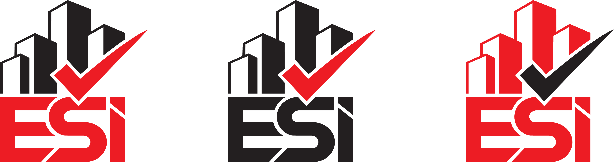
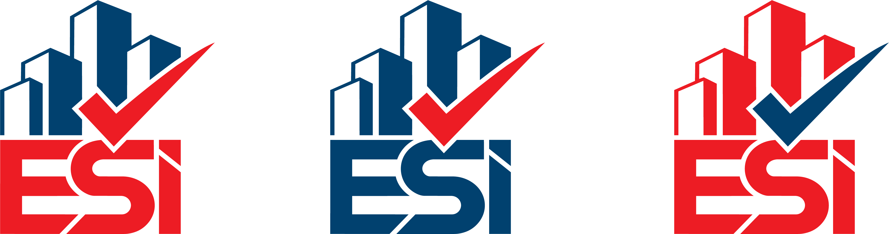
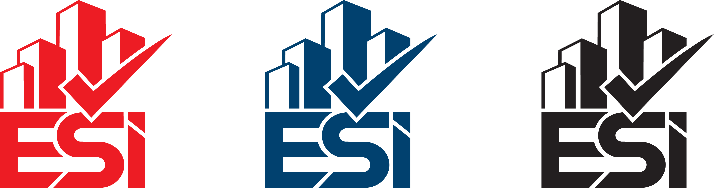
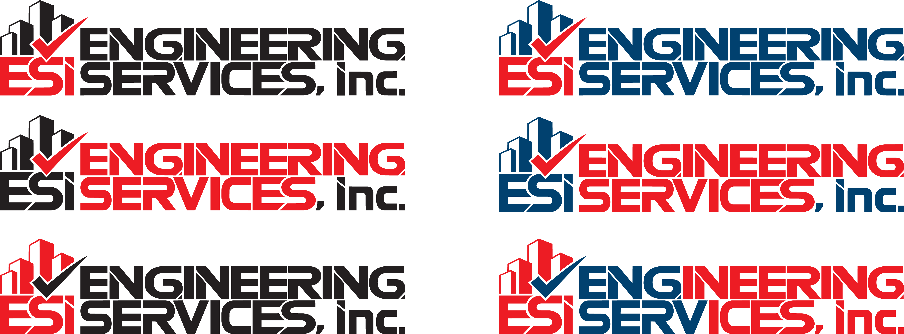

One mark. Built exactly to spec. A bold building silhouette, a flat checkmark, and the ESi lettermark — presented in three color treatments and a complete typographic system.

This one is for continuity. The new mark in black and red reconnects directly with the palette Oscar has been using in his existing materials — keeping the identity familiar to anyone who already knows ESi, while replacing the old logo with something much stronger and more scalable. The near-black building, the pure red checkmark, three sub-variations of the same color treatment.

The primary brand-compliant version. The building silhouette in midnight blue grounds the mark with authority and depth, while the pure red checkmark cuts through as the accent that communicates certification and approval. Three sub-variations showing different distributions of red and blue across the building and the ESi lettermark — each valid, each usable depending on the application context.

Three single-color versions of the complete mark — full red, full blue, and full near-black. The red and blue variants are for single-ink print, embossing, and branded contexts where one dominant color is preferred. The near-black version is the silhouette master — designed for use on light surfaces, official documents, letterpress, and any application where only one dark ink is available.
Six color combinations of the horizontal lockup — the ESi mark paired with Engineering Services, inc. across different distributions of red, blue, and near-black. The mark and wordmark structure is identical in every panel. The only variable is the color treatment, covering every formal print and digital context the brand will encounter.

Pure Red #e81820 is the new dominant brand color — a vivid, high-energy red that reads clearly at any size and in any context. It replaced the previous deeper crimson to improve legibility and stand further from black when used in text and print.
Midnight Blue #004068 is the secondary color. Distinguishable from black on white surfaces, it carries authority and depth across the building silhouette, the ESi lettermark, and all secondary system elements.
Near Black #201820 is used in the black-and-red variation and as the single-color dark master for official documents and single-ink applications.
● Red on White — primary heading and accent pairing
● Blue on White — body text, UI, links, secondary type
● Near-Black on White — official documents and reports
● White on Red — reverse CTAs and highlight banners
● White on Blue — dark-mode headers and reversed fields
● Red on Blue — accent text on dark branded backgrounds
● Blue on Cream — document body text and report typography
Two typefaces from the Barlow family — condensed for authority, regular for clarity. Built for a firm where every word carries professional weight.
| Attribute | Specification |
|---|---|
| Brand Name | ESi — uppercase E, uppercase S, lowercase i. Proprietary capitalization. Never alter under any circumstance. |
| Never Write | ESI / Esi / esi / E.S.I. — only "ESi" is correct in all materials without exception. |
| Variation A | Black and red — the original spirit version. For continuity with existing ESi materials and audiences already familiar with the brand. |
| Variation B | Blue and red — the primary brand color version. Default for all new formal applications going forward. |
| Variation C | Single color — red, blue, and near-black monochromatic versions. For single-ink print, embossing, and dark-surface applications. |
| Primary Color | #e81820 Pure Red — the checkmark, primary accent elements, and dominant brand signal. |
| Secondary Color | #004068 Midnight Blue — building silhouette, ESi lettermark, body text, secondary system elements. |
| Dark / Black | #201820 Near Black — used in Variation A and the dark monochromatic version. Replaces pure black for added warmth. |
| Minimum Size | Full lockup: 120px screen / 1 inch print. Icon only: 32px screen / 6mm print. |
| Clear Space | Maintain space equal to the cap-height of the "E" on all four sides in every application. |
| File Formats | Production master: SVG or EPS vector. Screen: PNG at 2x minimum. Print: PDF or EPS. Never JPG for production logo output. |
| Territory | South Florida · Tri-County · Miami-Dade primary · Broward secondary · Palm Beach future |